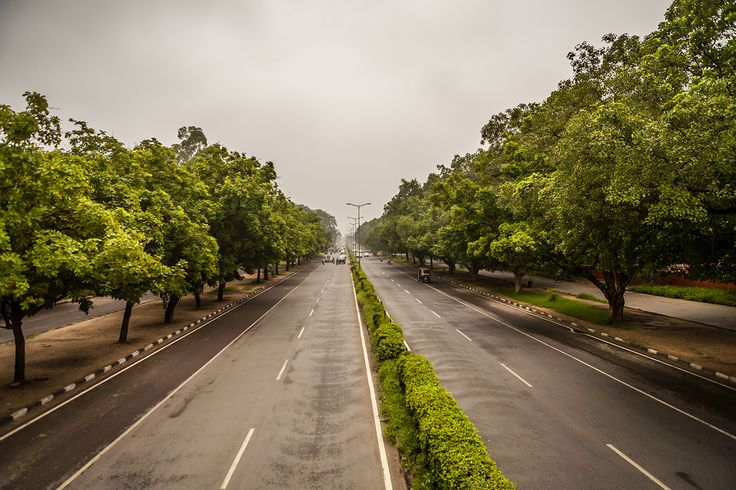

Places to visit
Chandigarh has various visitor attractions including theme gardens within the city.
Chandigarh
Rose Garden
Zakir Hussain Rose Garden, is a botanical garden located in Chandigarh, India and spread over 30 acres (120,000 m2) of land,[1] with 50,000 rose-bushes of 1600 different species.[2] Named after India's former president, Zakir Hussain and created in 1967 under the guidance of Dr M.S. Randhawa, Chandigarh's first chief commissioner, the garden has the distinction of being Asia's largest.[2] The garden has not only roses, but also trees of medicinal value. Some of the medicinal plants that can be spotted here are bel, bahera, harar, camphor and yellow gulmohar. The rose plants have been planted in carved-out lawns and flower beds.
Sukhna Lake
Sukhna Lake in Chandigarh, India, is a reservoir at the foothills of the Himalayas, the Shivalik hills. This 3 km² rainfed lake was created in 1958 by damming the Sukhna Choe, a seasonal stream coming down from the Shivalik Hills. Originally the seasonal flow entered the lake directly causing heavy siltation. To check the inflow of silt, 25.42 km² of land was acquired in the catchment area and put under vegetation. In 1974, the Choe was diverted and made to bypass the lake completely, the lake being fed by three siltation pots, minimising the entry of silt into the lake itself.
Rock Garden
The Rock Garden of Chandigarh is a sculpture garden in Chandigarh, India, also known as Nek Chand's Rock Garden after its founder Nek Chand, a government official who started the garden secretly in his spare time in 1957. Today it is spread over an area of 40 acres (161874.25 m²). It is completely built of industrial and home waste and thrown-away items.[1][2] Iconic Rock Garden creator Nek Chand dead.The 90-year-old Padma Shri awardee has millions of fans across the globe
Shanti Kunj
Shanti Kunj garden in Chandigarh is situated at a very peaceful place that is free from any noise and pollution. Therefore, it has been rightly named as Shanti Kunj. It is located between the Rose Garden and the Cricket Stadium in Sector 16. In the Chandigarh Shanti Kunj park, you can find different varieties of plants and trees like vertical shaped trees, trees that provide shade, trees apt for environment and flowering trees. Also the garden contains a plenty of medicinal plants that are utilized to cure several diseases. .
Punjab Cricket Association Stadium
The Punjab Cricket Association Stadium (Punjabi: ਪੰਜਾਬ ਕ੍ਰਿਕੇਟ ਏਸੋਸਿਏਸ਼ਨ ਆਈ ਐਸ ਬਿੰਦਰਾ ਸਟੇਡਿਅਮ) is located in Mohali, nearChandigarh. It is popularly referred to as the Mohali Stadium. The stadium is home to the Punjab team. Punjab's secondinternational cricket stadium has been approved by BCCI in Bathinda, Punjab. The construction of the stadium took around ₹ 25 crore and 3 years to complete. The stadium has an official capacity of 26,950[3] spectators.